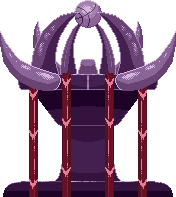

Horizon's Call
Join Tebb, an alien engineer on a vast colony ship hundreds of years into deep space in a new indie RPG adventure!
The Horizon's Call is a deep-space seeding ship on a voyage to find new habitable worlds to colonise.
600 years into its voyage, a deadly secret from the past finally emerges once again to sow discord and chaos.
You play as Tebb, a Priddin engineer working to maintain the ship's power generator.
In the depths of the vessel, she stumbles across a sealed door to areas of the Horizon's Call dark, and long forgotten.
Places that should have been left alone.
Horizon's Call is a top-down sprite RPG in the stlye of the classical titles from the era of the Gameboy. You will traverse
mechanical dungeons, battle with mutated enemies and work to uncover a piece of the past that has been intentionally buried.
Solve puzzles with tools that you find along the way, explore an overworld that is dripping with lore and carefully planned backstory,
converse with unique aliens and immerse yourself in this first instalment of the Ultraverse sagas.
Follow the game's development here.
